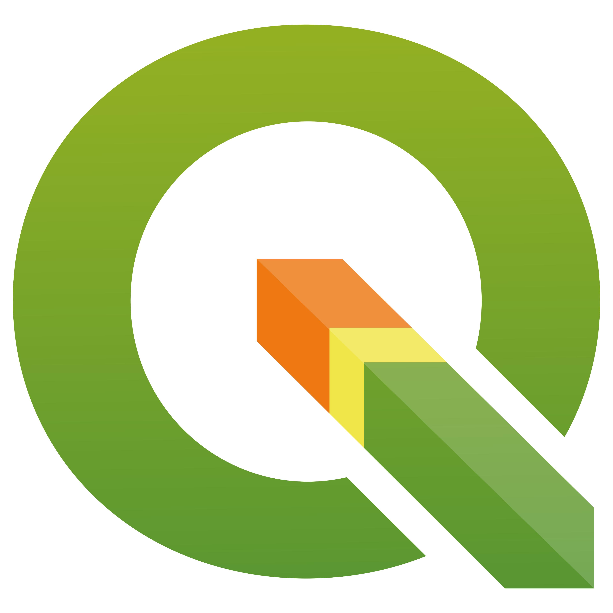
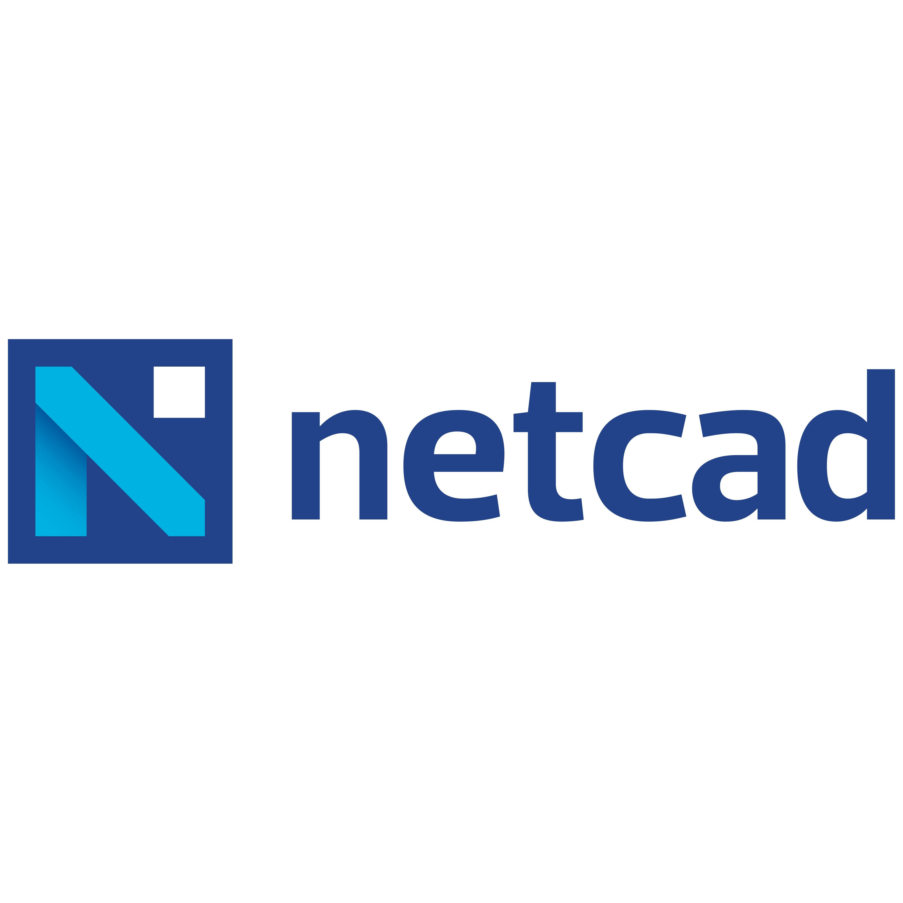
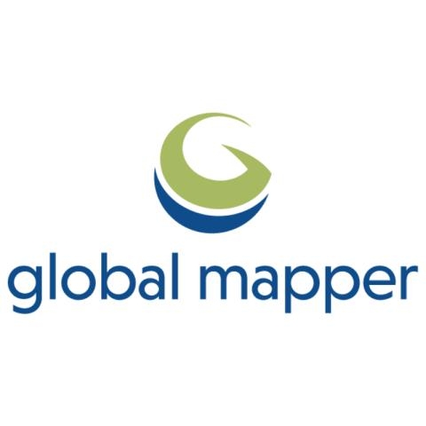
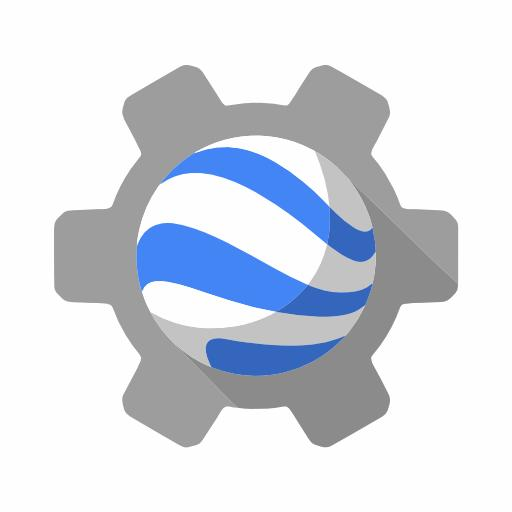
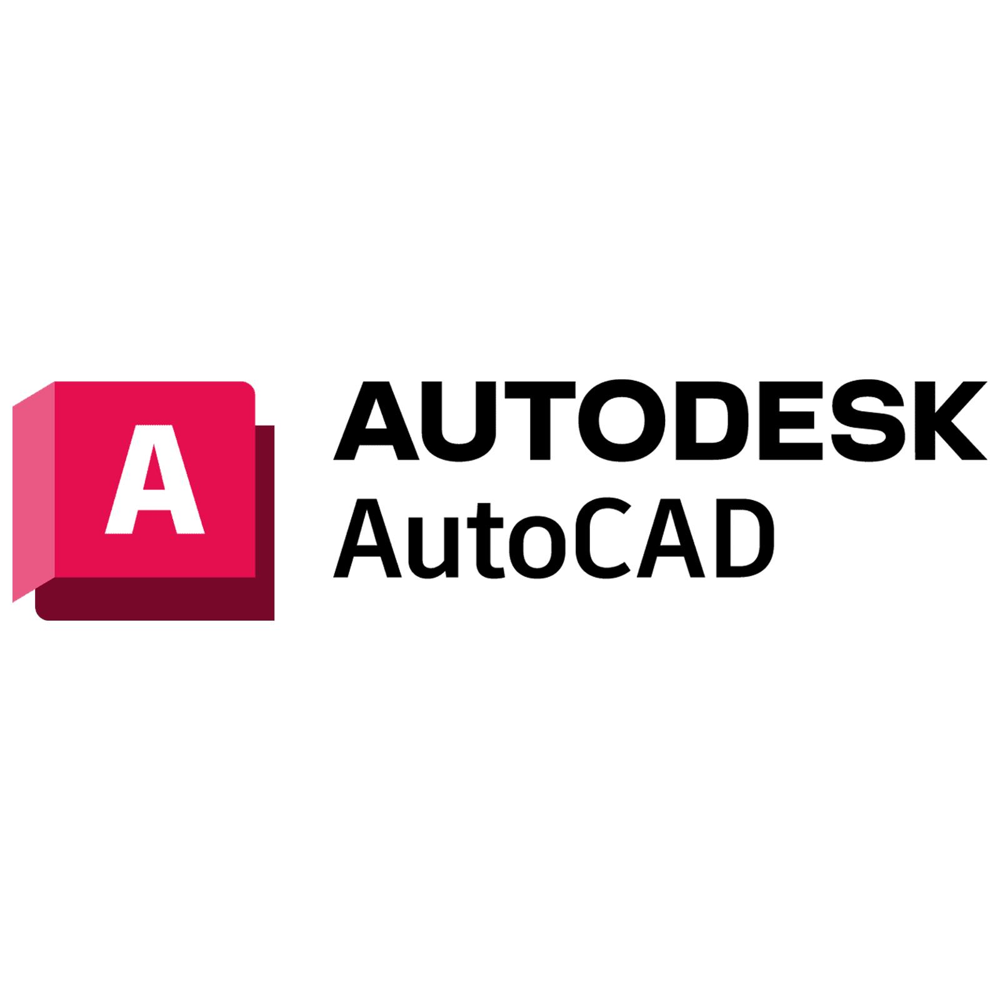
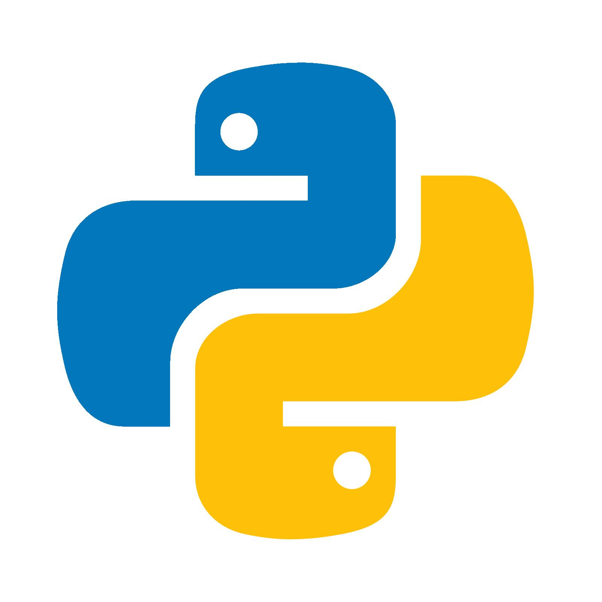

Technologies I Have Used
Throughout my Geomatics Engineering studies and internship, I have gained experience with different tools for GIS, remote sensing, mapping, and data processing.
| Technology | Description | Image |
|---|---|---|
| QGIS | Used in university projects for various GIS applications, including geographic data analysis, thematic mapping, classification, and heat map creation. |
 |
| Netcad | Performed basic editing operations on maps and drawings during my internship. |
 |
| Global Mapper | Used during my internship to prepare digital elevation models, process terrain data, and mosaic raster datasets. |
 |
| Google Earth Engine | Used in university projects to process and analyze remote sensing data and satellite imagery. |
 |
| AutoCAD | Completed technical drawing exercises as part of an elective course at university. |
 |
| Python | Used for programming and data processing in university assignments. |
 |